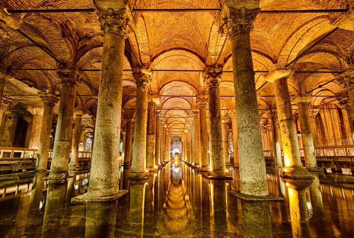

Многие люди даже не представляют себе Турцию без пляжей, системы «все включено» и огромных порций в отелях. А очень зря! Ведь сколько прекрасного может открыть эта древняя страна, историю которой творило не одна могущественная цивилизация. Турция – страна, которая определенно имеет душу и сумеет заворожить даже самого привередливого туриста. Одно из самых популярных туристических направлений в Турции – Стамбул. Он полон достопримечательностей. В старых районах расположен Гранд Базар – место скопления турецкого колорита, дворец Долмабахче и дворец Топкапы, Голубая Мечеть и собор Святой Софии. Во время посещения этих мест понимаешь, что в Турции есть нечто намного ценнее пятизвездочных отелей и курортов.
О местах, описанных в «Илиаде» знают все, но не все догадываются, что многие из них расположены в Турции. Прикоснуться к древней и волшебной истории можно в древних городах страны, а также в районе Каппадокии. Ну и, конечно, пляжи. В Турции они на любой вкус. От песчаных до покрытых галькой и камнями, окруженных старинными бухтами и крепостными стенами. Пляжный отдых в Турции – синоним комфорта и бездельничества, ведь туризм в стране развит очень хорошо. Но не стоит забывать и об архитектурных и исторических достопримечательностях. Они того стоят.
Что посмотреть в Турции?
1. Город Стамбул
Стамбул расположен на двух берегах, на разных континентах и в разных столетиях. Более трех тысяч архитектурных и культурных памятников отображают историю четырех империй, чьей столицей был Стамбул. Пролив Босфор делит его на две части – Европу и Азию. Стамбул впитал лучшее от каждой из них. Это город сказок и величия, силуэт которого вырисовывают не только мечети и дворцы, но и небоскребы, банки и торговые центры.
2. Пролив Босфор
Это пролив длиной в 30 км, разделяющий Европу и Малую Азию. Его максимальная ширина – 3700 м, минимальная – 700. Пролив сформировался около 7,5 тыс. лет назад впоследствии таяния большого количества льда и снега. Босфор – это сердце Стамбула, давшее жизнь городу и ставшее его символом. Совершив прогулку по проливу, можно вдоволь налюбоваться прекрасными пейзажами столицы Турции.

3. Каппадокия
В самом сердце Турции расположен уникальный район, богатый историей и достопримечательностями. Первое, чем удивляет Каппадокия – ландшафтами. Здесь можно увидеть скалы в форме грибов и невысокие горы. Также тут сохранилось настоящее подземное царство. Первые христиане вырыли тут пещерные углубления, создав города под землей. Их глубина достигала 85 метров, а проживало в них до 10 тыс. человек.
4. Памуккале
Это всемирно известный термальный курорт. Создала его сама природа. Кроме того, что воды Памуккале целебные, источники выглядят, словно срисованные со страниц сказки. Из-за отложения солей они, как белоснежные террасы. В таких соляных бассейнах и нежатся отдыхающие. Рядом с Памуккале находится еще одно интересное место – руины античного города Хиераполис.
5. Дворец Долмабахче
Своим появлением дворец Долмабахче обязан желанию Абдул-Меджида I быть ближе к европейским богатствам. Это самая «нетурецкая» резиденция султана в Стамбуле. Дворец строили с 1842 по 1853 года в стиле барокко, потратив одного только золота 14 тонн. Долмабахче состоит из трех частей, в которых насчитывается 285 комнат и 44 зала. Также на территории комплекса есть прелестные парковые павильоны и летний дворец.
6. Гора Арарат
Гора Арарат находится на востоке Турции. Согласно библейским сказаниям, к ней причалил когда-то ковчег Ноя. Арарат состоит из конусов двух вулканов, слившихся основаниями: Большого Арарата и Малого Арарата. Высота первого – 5165 метров. Это самая высокая точка Турции. На склонах горы множество ледниковых пещер, национальный парк, цветущие долины и живописные поляны, а также старинные монастыри.
7. Собор Святой Софии в Стамбуле
Этот собор – символ «золотого века» Византии, лучший пример византийского зодчества. История собора начинается в IV веке. Более тысячи лет собор был крупнейшим христианским храмом. Его высота 55,6 м, а диаметр купола 31 м. На строительство роскошного собора потратили сумму, равную двум годовым бюджетам Византии.
8. Голубая мечеть в Стамбуле
Мечеть стоит на берегу Мраморного моря. Это символ города, не имеющий аналогов в мире. Первое, что отличает Голубую Мечеть от других – шесть, а не четыре минарета. По легенде, виной тому ошибка зодчего, который плохо расслышал указание султана. Строили мечеть с 1609 по 1616 год, используя мрамор, камень и керамику. Сооружение получилось величественным, вызывающим восторг и трепет.
9. Дворец Топкапы
Дворец построили в 1479 году по указанию султана Мехмеда. Его площадь 700 тыс. м², он окружен стеной длиной в 1400 метров. Дворец Топкапы был свидетелем жизни и правления 25 султанов. Именно в его стенах развивалась история любви наложницы Хюррем, ставшей женой султана, и Сулеймана Великолепного. В сериале «Великолепный век» события происходят именно в роскошном дворце Топкапы.
10. Галатская башня
Это одна из старейших достопримечательностей Стамбула. Еще в V веке в этой местности была башня. Дошедшее до наших дней сооружение построили генуэзцы в 1348-1349 годах на холме. Высота постройки 61 метр, а из-за расположения на возвышенности, она видна практически с любой точки города. На вершине башни расположена смотровая площадка, с нее открываются удивительные виды.
11. Девичья башня
Девичья башня расположена на небольшом скалистом островке Босфорского пролива. Ее история начинается столетиями ранее нашей эры, она окутана легендами и романтическими историями. Сегодня она пользуется огромной популярностью у туристов, в ней есть ресторан, музей, магазин сувениров, смотровая площадка, кафе и бар. Башню изобразил на картине «Вид Леандровой башни в Константинополе» Айвазовский.
12. Гранд базар в Стамбуле
В историческом центре Стамбула расположен один из самых больших в мире крытых базаров. Гранд базар построили еще в 1461 году, и он стал душой города. Базар занимает несколько кварталов, внутри него переплетается 61 улица, находится 4400 лавок, более 2000 ателье, 18 фонтанов, мечети и даже школа. Тут можно купить все, включая ковры ручной работы, золото, серебро, амулеты и пряности.
13. Цистерна Базилика
Это подземное водохранилище, построенное греками в IV веке. С первого взгляда оно напоминает дворец, ведь состоит из 336 девятиметровых колонн, отличающихся по внешнему виду. Они были привезены из античных храмов. В цистерне Базилика помещалось 100 тысяч тонн воды. Стены цистерны были огнеупорными и покрыты водоизоляционным раствором. По назначению Базилику использовали до XVI века.
14. Древний город Эфес
Эфес – это огромный музей под открытым небом. История города началась в V веке до н.э., а в XV он был разрушен. Археологи отреставрировали его и подготовили для осмотра туристами. Главная достопримечательность Эфеса – храм Артемиды – одно из семи чудес света. Осмотреть город можно, войдя с верхнего или нижнего входа, но удобней гулять по дороге, ведущей сверху вниз.
15. Древний город Сиде
Это главная археологическая область Турции, а также один из самых популярных курортов. Он находится на полуострове в 75 км от Анталии. На территории старинного города сохранились стены, есть полуразрушенные колонны, общественные бани, в них расположен музей. Далее можно увидеть руины храма Диониса, Тихе и Фортуны, огромного театра, где проводились бои гладиаторов.
16. Древний город Фазелис В 60 км от Анталии, у подножия описанной Гомером в «Илиаде» горы Тахталы находятся руины старинного города Фазелис. Он был основан еще в VII веке до н.э. колонистами с Родоса. Туристы могут увидеть в городе развалины акведука, снабжавшего водой весь город, древней стены, театра, храмов и некрополь. Говорят, именно тут похоронили Александра Македонского.